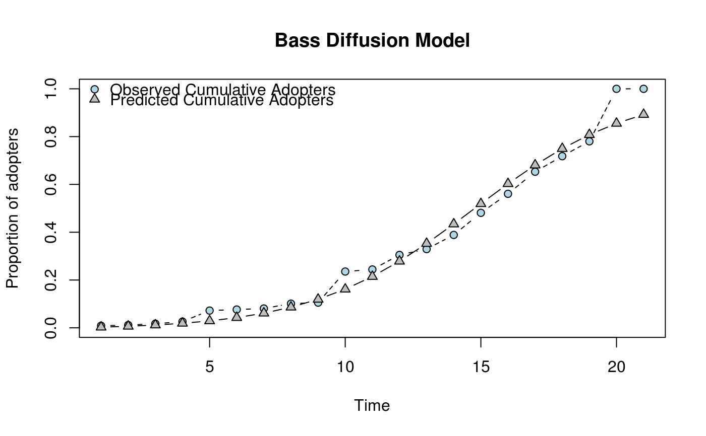

Fits the Bass Diffusion model. In particular, fits an observed curve of proportions of adopters to \(F(t)\), the proportion of adopters at time \(t\), finding the corresponding coeficients \(p\), Innovation rate, and \(q\), imitation rate.
fitbass(dat, ...) # S3 method for diffnet fitbass(dat, ...) # S3 method for default fitbass(dat, ...) # S3 method for diffnet_bass plot( x, y = 1:length(x$m$lhs()), add = FALSE, pch = c(21, 24), main = "Bass Diffusion Model", ylab = "Proportion of adopters", xlab = "Time", type = c("b", "b"), lty = c(2, 1), col = c("black", "black"), bg = c("lightblue", "gray"), include.legend = TRUE, ... ) bass_F(Time, p, q) bass_dF(p, q, Time) bass_f(Time, p, q)
| dat | Either a diffnet object, or a numeric vector. Observed cumulative proportion of adopters. |
|---|---|
| ... | Further arguments passed to the method. |
| x | An object of class |
| y | Integer vector. Time (label). |
| add | Passed to |
| pch | Passed to |
| main | Passed to |
| ylab | Character scalar. Label of the |
| xlab | Character scalar. Label of the |
| type | Passed to |
| lty | Passed to |
| col | Passed to |
| bg | Passed to |
| include.legend | Logical scalar. When |
| Time | Integer vector with values greater than 0. The \(t\) parameter. |
| p | Numeric scalar. Coefficient of innovation. |
| q | Numeric scalar. Coefficient of imitation. |
An object of class nls and diffnet_bass. For more
details, see nls in the stats package.
The function fits the bass model with parameters \([p, q]\) for values \(t = 1, 2, \dots, T\), in particular, it fits the following function:
$$ F(t) = \frac{1 - \exp{-(p+q)t}}{1 + \frac{q}{p}\exp{-(p+q)t}} $$
Which is implemented in the bass_F function. The proportion of adopters
at time \(t\), \(f(t)\) is:
$$ f(t) = \left\{\begin{array}{ll} F(t), & t = 1 \\ F(t) - F(t-1), & t > 1 \end{array}\right. $$
and it's implemented in the bass_f function.
For testing purposes only, the gradient of \(F\) with respect to \(p\)
and \(q\) is implemented in bass_dF.
The estimation is done using nls.
Bass's Basement Institute Institute. The Bass Model. (2010). Available at: http://www.bassbasement.org/BassModel/Default.aspx. (Accessed: 29th March 2017)
Other statistics:
classify_adopters(),
cumulative_adopt_count(),
dgr(),
ego_variance(),
exposure(),
hazard_rate(),
infection(),
moran(),
struct_equiv(),
threshold(),
vertex_covariate_dist()
# Fitting the model for the Brazilian Farmers Data -------------------------- data(brfarmersDiffNet) ans <- fitbass(brfarmersDiffNet) # All the methods that work for the -nls- object work here ans#> Nonlinear regression model #> model: dat ~ bass_F(Time, p, q) #> data: parent.frame() #> p q #> 0.002279 0.336735 #> residual sum-of-squares: 0.05184 #> #> Number of iterations to convergence: 10 #> Achieved convergence tolerance: 3.567e-06summary(ans)#> #> Formula: dat ~ bass_F(Time, p, q) #> #> Parameters: #> Estimate Std. Error t value Pr(>|t|) #> p 0.0022787 0.0007245 3.145 0.00533 ** #> q 0.3367353 0.0268004 12.565 1.19e-10 *** #> --- #> Signif. codes: 0 ‘***’ 0.001 ‘**’ 0.01 ‘*’ 0.05 ‘.’ 0.1 ‘ ’ 1 #> #> Residual standard error: 0.05223 on 19 degrees of freedom #> #> Number of iterations to convergence: 10 #> Achieved convergence tolerance: 3.567e-06 #>coef(ans)#> p q #> 0.002278742 0.336735345vcov(ans)#> p q #> p 5.249308e-07 -1.888583e-05 #> q -1.888583e-05 7.182629e-04